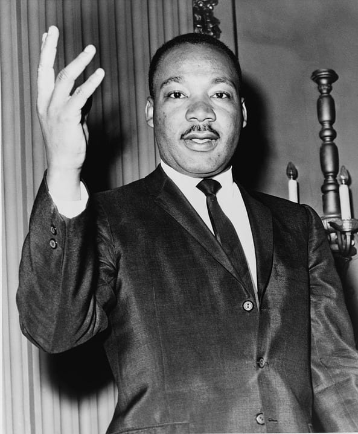
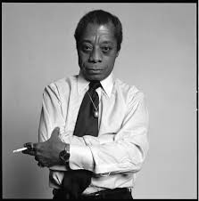
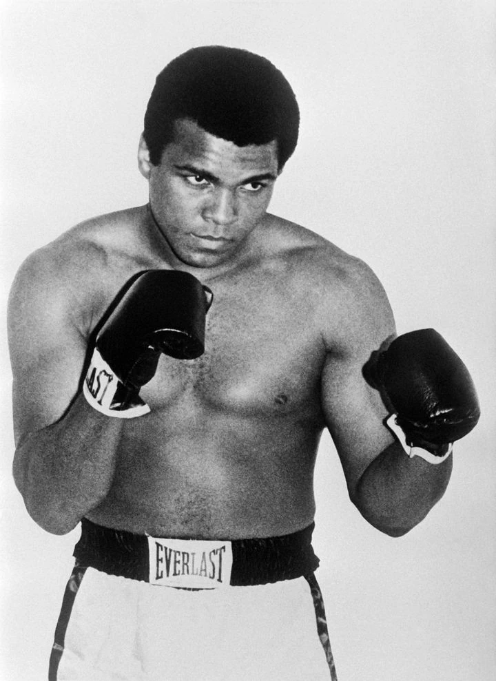

- Quick service
- Convenience
- Affordability
- Affordability
- Digestive issues
- Saturated fats


Comparison between the pros and cons of Popeye to find out if it is so good.
| Pros | Cons |
|---|---|
|
|
|
|
|  |
Martin Luther King JrMartin Luther King Jr. (1929 – 1968) was a Baptist minister, civil rights leader, and Nobel Peace Prize winner. He was a leader of the American civil rights movement in the 1950s and 1960s. Known for:
|
|  |
James BaldwinJames Baldwin (1924-1987) was an American writer, activist, and spokesman for the civil rights movement. He was a leading figure in the movement and his work helped raise awareness about racial and sexual oppression. Known for:
|
|  |
Muhammad AliMuhammad Ali (1942-2016) was a boxer and activist who won the world heavyweight championship three times. He was also a peace advocate and humanitarian activist. He raised awareness about racial and sexual oppression. Known for:
|